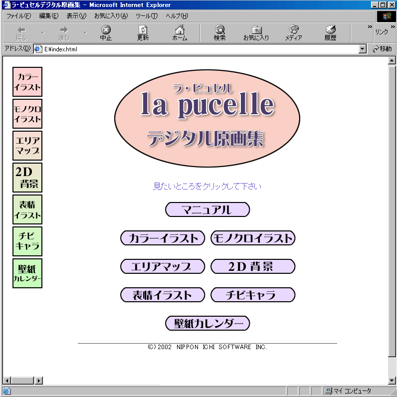
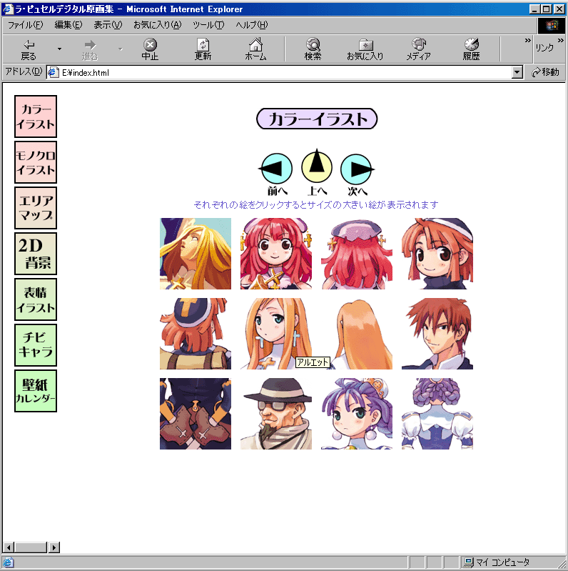
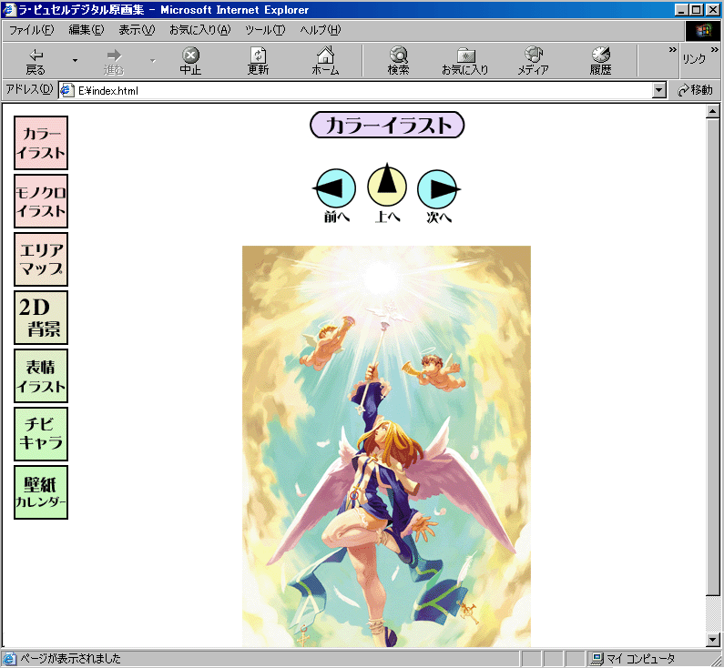
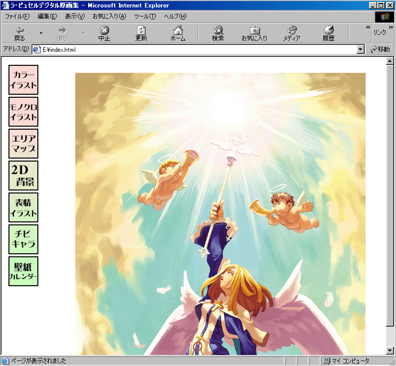

：ひとつ前の階層に戻ります。
：ひとつ前の階層に戻ります。 ：次のページに進みます。
：次のページに進みます。 ：前のページに戻ります。
：前のページに戻ります。
見たい内容を選ぶ
-
ソフトを起動させると、メニュー 一覧画面が表示されます。
メニューの一覧又は画面左のアイコン一覧から見たい内容を選んでクリックして下さい。

表示が選んだ内容のインデックス（一覧）画面に変わります。

見たい絵を選ぶ
- インデックス画面から見たい絵を選んでクリックすると、その絵が表示されます。
絵の上のアイコンを使って、ひとつ前の階層に戻る / 次（前）の絵を表示させることが出来ます。

大きいサイズの絵を見る
- 絵の部分をクリックすると、さらに大きいサイズの絵を見る事が出来ます。
大きいサイズの絵が表示された後、再び絵の部分をクリックすると、元のサイズの絵に戻ります。

4.ユーザーサポート
ユーザーサポート連絡先
-
Tel：0583-71-7239 Fax：0583-71-7212（AM 9：30〜PM 5：30 土日祝日を除く）
〒504-0835 岐阜県各務原市那加雄飛ヶ丘町 17番地46
株式会社 日本一ソフトウェア ユーザーサポート係
日本一ソフトウェア ホームページアドレス http://nippon1.jp/
5.注意事項
注意事項
- ※本CD-ROMをオーディオ用CDプレイヤーでは絶対に再生しないでください。スピーカーが壊されたり、耳に障害を起こす事があります。
※本CD-ROMに収録されたデータの全部または一部を権利者に無断で複製・転載・改変することは、これを固く禁じます。
※製品名および社名は、各社の商標、登録商標です。